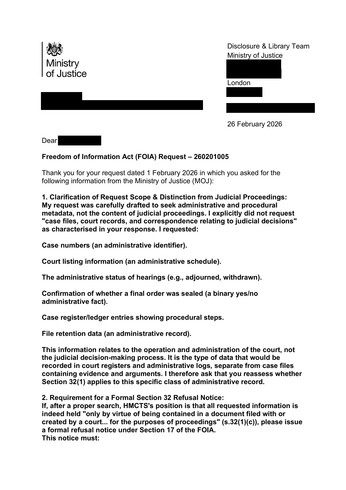

GHF-E106-R73-A1 WhatDoTheyKnow reply
HMCTS FOI 260201005 response

Transcript
Requester [email redacted] Disclosure & Library Team Ministry of Justice [address redacted] London [address redacted] [email redacted] 26 February 2026 Dear Requester , Freedom of Information Act (FOIA) Request – 260201005 Thank you for your request dated 1 February 2026 in which you asked for the following information from the Ministry of Justice (MOJ): 1. Clarification of Request Scope & Distinction from Judicial Proceedings: My request was carefully drafted to seek administrative and procedural metadata, not the content of judicial proceedings. I explicitly did not request "case files, court records, and correspondence relating to judicial decisions" as characterised in your response. I requested: Case numbers (an administrative identifier). Court listing information (an administrative schedule). The administrative status of hearings (e.g., adjourned, withdrawn). Confirmation of whether a final order was sealed (a binary yes/no administrative fact). Case register/ledger entries showing procedural steps. File retention data (an administrative record). This information relates to the operation and administration of the court, not
Read more
the judicial decision-making process. It is the type of data that would be recorded in court registers and administrative logs, separate from case files containing evidence and arguments. I therefore ask that you reassess whether Section 32(1) applies to this specific class of administrative record. 2. Requirement for a Formal Section 32 Refusal Notice: If, after a proper search, HMCTS's position is that all requested information is indeed held "only by virtue of being contained in a document filed with or created by a court... for the purposes of proceedings" (s.32(1)(c)), please issue a formal refusal notice under Section 17 of the FOIA. This notice must: 2 a. State that fact. b. Specify the exact subsection of Section 32 you are relying upon (e.g., s.32(1)(a), (b), or (c)). c. Explain why that exemption applies to the information requested, addressing the distinction between administrative metadata and judicial records noted above. 3. Duty to Provide Advice and Assistance (Section 16): Under Section 16 of the FOIA, you have a duty to provide advice and assistance. Your direction to "contact the relevant court or tribunal directly" is generic. To fulfil this duty, please provide: a. The specific contact details for the court record holder for the Cardiff County Court (or relevant South Glamorgan court) for 1974-era records. b. A clear reference to the "appropriate Procedure Rules" you mention (e.g., the specific part of the Civil Procedure Rules or Practice Direction) that govern access to historical administrative court data of this nature. c. Guidance on the precise wording or form such a request to the court should take, given I am seeking administrative metadata rather than case file contents. 4. Search for Non-Exempt Information & Duty to Confirm or Deny: Finally, I remind you of your duty under Section 1(1)(a) of the FOIA to confirm or deny whether you hold the information. Your current response suggests you may not have conducted a search. Please confirm that a search of relevant administrative systems (separate from judicial case files) has been conducted for the requested metadata. Even if some information is exempt under Section 32, other parts (such as current file retention policies for historic records) may not be. I am making a request under the Freedom of Information Act 2000 for **administrative and procedural records** held by HM Courts and Tribunals Service relating to the following civil proceedings: **Case title:** BP Properties Ltd v Buckler (and/or BP Pension Trust Ltd v Requester) **Court:** Cardiff County Court (or relevant South Glamorgan county court) **Year:** 1974 **Relevant hearings:** July 1974 and on or around 30–31 October 1974 This request is limited to **administrative metadata and court records of process**, and does not seek judicial reasoning, pleadings, evidence, or transcripts. Your request has been handled under the FOIA. The MoJ acting as a public authority does not hold any information within the scope of your request. The information, if held, cannot be obtained from the administrative systems held for the public authority purposes so is therefore not subject to the FOIA. 3 However, the information, if held, can only be obtained by accessing the case records, which are held in the custody of the courts, for the purposes of the courts, only. You may wish to contact the Courts directly to apply for access to the information. To contact the Courts, please see the information that’s published at: https://www.find-court-tribunal.service.gov.uk/ Find a Court or Tribunal - GOV.UK The FOIA does not oblige a public authority to create information to answer a request if the requested information is not held. The duty is to only provide the recorded information held. Appeal Rights If you are not satisfied with this response, you have the right to request an internal review by responding in writing to one of the addresses below within 40 working days of the date of this response. [email redacted] Disclosure & Library Team, Ministry of Justice, Postal Point 5.22, 102 Petty France, [address redacted] You do have the right to ask the Information Commissioner’s Office (ICO) to investigate any aspect of your complaint. However, please note that the ICO is likely to expect internal complaints procedures to have been exhausted before beginning their investigation. Yours sincerely Knowledge and Information Liaison Officer National Support Unit HM Courts & Tribunals Service
Artifact description
Response FOI 260201005 (letter attached): the MoJ as a public authority holds no information in scope; any records would be court records held by the court.
| Catalogue ID | GHF-E106-R73-A1 |
|---|---|
| What it is | PDF document from HM Courts and Tribunals Service. Attached to an email received on 26 February 2026, their reference FOI 260201005. 3 pages. |
| From | HM Courts and Tribunals Service |
| Email received | 26 February 2026 |
| Their reference | FOI 260201005 |
| Pages | 3 |
| File | FOI260201005 Response.pdf (126 KB) |
| State | Read |
Our integration
Concern to test: whether this reply answers the question as asked, or a narrower one. Not checked against the original request wording here.
Related: Timeline · Disclosure Dartboard